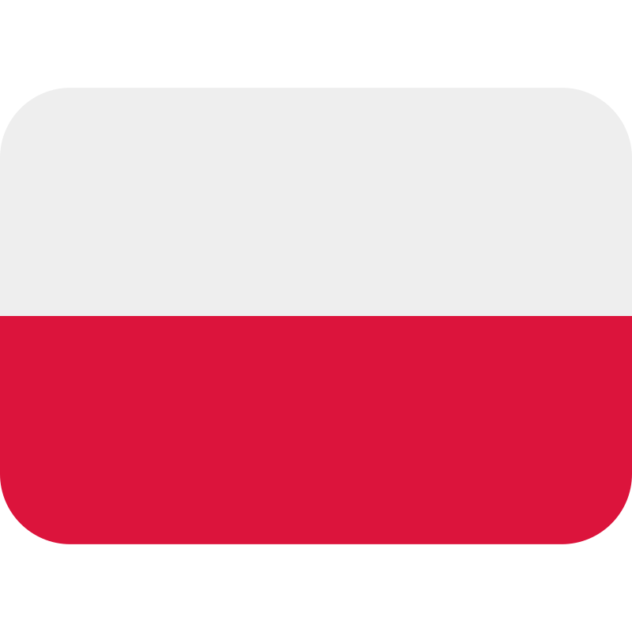
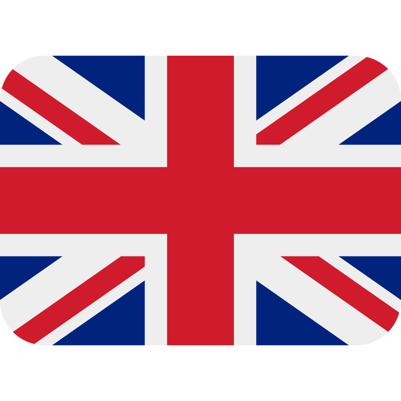
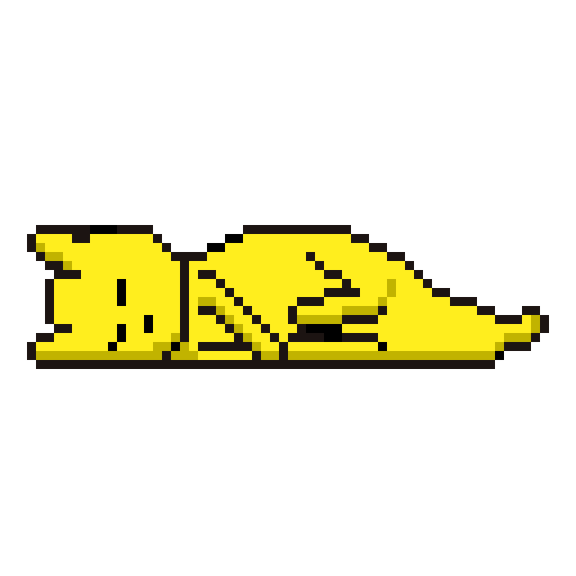

Mainly C++, JS and TS dev from poland.Polski deweloper głównie C++, JS oraz TS.
Daily driving debian on my laptop and Na codzień używam debian na laptopie oraz phonetelefonie
I like coding,sewing, baking and drawing.Lubie programować, szyć, piec oraz rysować.
Find me onznajdzi mnie na
mastodon,
github
and
youtube
Also see projects and blogs
*also known as thenameisluk*znany równie jako thenameisluk